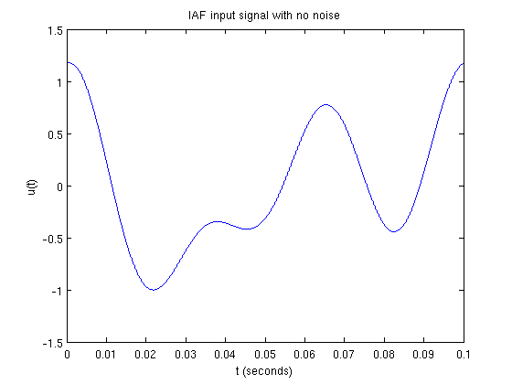
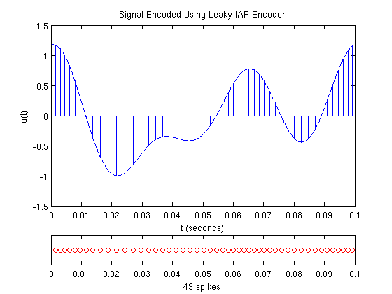
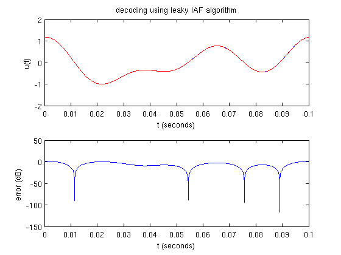
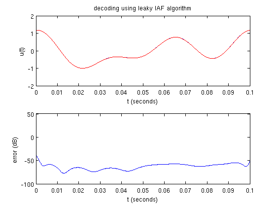
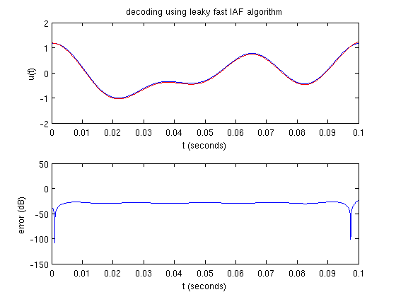
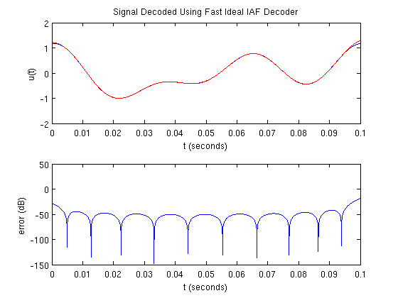

Time Encoding and Decoding with an Integrate-and-Fire Neuron
This demo illustrates the time encoding and decoding of a bandlimited signal using an integrate-and-fire neuron.
Contents
Generating a Test Signal
Generate a noiseless signal 0.1 s long sampled at 1 MHz containing 3 components no greater than 32 Hz:
dur = 0.1; % duration fs = 1e6; % sampling frequency dt = 1/fs; % sampling resolution f = 32; bw = 2*pi*f; % bandwidth (rad/s) t = [0:dt:dur]; % time support np = -inf; % noise level if np == -inf, fig_title = 'IAF Input Signal with No Noise'; else fig_title = sprintf('IAF Input Signal with %d dB of Noise',np); end rand('twister',0); randn('state',0); fprintf(1,'%s\n',fig_title); u = func_timer(@gen_test_signal,dur,dt,f,np); plot_signal(t,u,fig_title);
IAF Input Signal with No Noise execution time = 0.598 s
Time Encoding
The IAF time encoder can make use of a leaky or ideal neuron model (i.e., when the neuron's resistance is infinite). Both models are demonstrated below.
Set the encoding parameters:
b = 3.5; % bias d = 0.7; % threshold R = 10; % resistance C = 0.01; % capacitance
Verify that recovery can take place with the leaky and ideal parameters:
if ~iaf_recoverable(u,bw,b,d,R,C), return end if ~iaf_recoverable(u,bw,b,d,inf,C), return end
Encode the signal using the leaky model:
fig_title = 'Signal Encoded Using Leaky IAF Encoder'; fprintf(1,'%s\n',fig_title); s_leaky = func_timer(@iaf_encode,u,dt,b,d,0,R,C); figure plot_encoded(t,u,s_leaky,fig_title);
Signal Encoded Using Leaky IAF Encoder execution time = 0.255 s
Encode the signal using the ideal model:
fig_title = 'Signal Encoded Using Ideal IAF Encoder'; fprintf(1,'%s\n',fig_title); s_ideal = func_timer(@iaf_encode,u,dt,b,d,0,inf,C); figure plot_encoded(t,u,s_ideal,fig_title);
Signal Encoded Using Ideal IAF Encoder execution time = 0.222 s
Time Decoding
The signal can be recovered for both the leaky and ideal models:
fig_title = 'Signal Decoded Using Leaky IAF Decoder'; fprintf(1,'%s\n',fig_title); u_rec_leaky = func_timer(@iaf_decode,s_leaky,dur,dt,bw,b,d,R,C); figure plot_compare(t,u,u_rec_leaky,fig_title);
Signal Decoded Using Leaky IAF Decoder execution time = 1.010 s
fig_title = 'Signal Decoded Using Ideal IAF Decoder'; fprintf(1,'%s\n',fig_title); u_rec_ideal = func_timer(@iaf_decode,s_ideal,dur,dt,bw,b,d,inf,C); figure plot_compare(t,u,u_rec_ideal,fig_title);
Signal Decoded Using Ideal IAF Decoder execution time = 0.237 s
Decoding can also be performed using a faster algorithm:
M = 5; % fast decoding parameter fig_title = 'Signal Decoded Using Fast Leaky IAF Decoder'; fprintf(1,'%s\n',fig_title); u_rec_leaky_fast = func_timer(@iaf_decode_fast,s_leaky,dur,dt,bw,M,b,d,inf,C); figure plot_compare(t,u,u_rec_leaky_fast,fig_title);
Signal Decoded Using Fast Leaky IAF Decoder execution time = 0.114 s
fig_title = 'Signal Decoded Using Fast Ideal IAF Decoder'; fprintf(1,'%s\n',fig_title); u_rec_ideal_fast = func_timer(@iaf_decode_fast,s_ideal,dur,dt,bw,M,b,d,inf,C); figure plot_compare(t,u,u_rec_ideal_fast,fig_title);
Signal Decoded Using Fast Ideal IAF Decoder execution time = 0.081 s
Author: Lev Givon
Copyright 2009-2011 Lev Givon